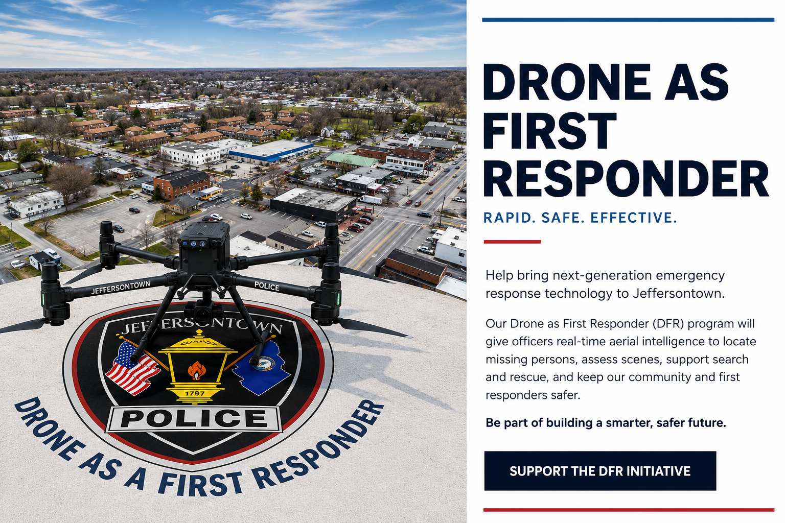

◉
Earlier AwarenessAn aerial view can provide information about a scene before responding officers arrive.


A Drone as First Responder program can deploy a pre-positioned drone to selected calls for service, giving responding officers an aerial view and valuable information before they arrive.
SUPPORT THE DFR INITIATIVEDFR is designed to add another source of real-time information during appropriate calls for service—helping responders better understand what is happening and make informed decisions as they approach a scene.
An aerial view can provide information about a scene before responding officers arrive.
Overhead visibility can help responders understand locations, movement and changing conditions.
Additional situational awareness can support planning and decision-making during higher-risk calls.
Technology can help provide useful information while officers and other responders are en route.
A typical DFR workflow uses a pre-positioned drone, trained personnel and agency procedures to provide aerial situational awareness during selected calls.
A qualifying call for service is identified according to department policy and operational criteria.
A trained operator deploys the drone toward the incident location to provide a live aerial perspective.
Authorized personnel use the live view to improve situational awareness as officers respond and manage the incident.

DFR programs are an emerging public-safety model that use pre-positioned drones to respond to certain calls and provide aerial situational awareness, often before officers reach the scene.
Your contribution to the Jeffersontown Police Foundation can help support technology, equipment and implementation needs associated with expanding the department's Drone as First Responder capability.
SUPPORT THE DFR INITIATIVE